THE COMMON EAVE: An AI Innovation Belt Organised by Public Life
Begin with retention, form through repair, and govern AI through named human responsibility: within the 11.4 sq km conceptual framework, five seams, three civic tests, two complete flagships, and a replayable, stoppable service-state steward form a reviewable renewal proposal.
THE COMMON EAVE: An AI Innovation Belt Organised by Public Life
Design Basis and Sources
V6.1 advances The Common Eave from a concept into civic infrastructure that can be seen, used, and stopped. Qinghe becomes a benchmark garden that makes tree-water-maintenance relations public; AI Origin gains a Shared Eave for all-weather learning, repair, care, and staffed help; Dazhongsi gains Four-Corner Commons for arrival, waiting, and night-time assistance. They do not compete as spectacle. Their test of AI innovation is more ordinary and more demanding: less rain exposure, less detour, a person to ask, and somewhere to pause. Source Source
V6.1 translates the recently public call for a human-machine experimental field, five-minute daily life, and perceptible public AI into a stricter design proposition: AI may help people switch a public space into an appropriate service state, but cannot replace people, control roads, or turn residents into data. The Shared Eave and Four-Corner Commons therefore become weather-care-arrival rooms with low-technology baselines, not technology showcases. Source
This is not a park imagined from zero. The latest public reporting describes the nine-kilometre heritage park as an all-age public corridor for nearly 70 communities, about 450,000 residents, more than ten universities, and more than forty research institutions. Those are corridor-context figures only—not a population, flow, or demand calculation for this submission's provisional scope. V6.1 therefore makes pause, detour, care, and human explanation tangible before it adds any future-AI spectacle. Source
Haidian's public-planning lineage shapes the form through compact renewal, technology-culture-ecology integration, and porous public ground. Source Source
Campus-city sharing, all-age access, and human-friendly AI make the civic interface a prerequisite of renewal. The recently approved control-plan narrative is regional context only; it neither replaces the call scopes nor creates parcel controls. Source Source
All site and key-area polygons remain provisional constraints. The two civic prototypes define place types and operating logic, not property, road engineering, heritage intervention, or approved siting. Source Spatial data Depth


This V6.1 concept-atmosphere visual communicates only the intended low-tech, usable, maintainable public-space character. It is not a site photograph, approved rendering, surveyed siting, engineering dimension, or evidence of public opinion. Method and rights boundaries are recorded in the copyright statement.


These two original V6.1 synthetic concept visuals test only human scale, material character, wet-weather use, and continuous ground. They are not existing conditions, approval renderings, surveyed siting, transport engineering, or performance evidence.
The proposal follows three evidence levels. Public government consultation and formal feedback are Level A; consented site walks, interviews, and co-design are Level B; Agent journeys are Level C hypotheses. Level C may reveal questions but cannot become claimed consent or acceptance. Source Source
This is a nested task—not a call for a few objects—combining 43.6 km2 of industry and future-city research, 11.4 km2 of overall design, and 368.4 ha of detailed design across three key areas. Source Depth
Policy establishes city duties and public questions; district statistics provide context only, never a substitute for site demographics, flows, rights, engineering, or consented engagement. Source Source Source
The evidence-action-falsification matrix contains thirteen papers: eleven full texts, complete manuscripts, full HTML articles, or page-by-page visual reviews; two remain abstract-screened. Metric
The Phase I paper verifies roughly 2.4 km, 16.8 ha, and opening in 2023. Three Paths and One Green, east-west reconnection, railway interpretation, and professional operations are existing groundwork—not Agent inventions. Source
Beijing climate studies supply variables to retest, not performance promises. Source Source
The metro paper requires route mapping by exit and quadrant; its six-station mean of eight minutes is a comparison, not a standard. Two older-adult studies require objective audits, perceived conditions, housing/community stratification, and deliberate inclusion of mobility-impaired people. Source Source Source
Knowledge-space and Zhongguancun research change permeability and absorptive-capacity measures. Source Source
Living-lab and smart-city research add responsibility, long-term public value, and device transparency. Source Source Source
Two green-space reviews recast the civic-climate spine as whole-life socio-ecological infrastructure: species, seasons, tree survival, maintenance, irrigation, equity, and public monitoring matter together. Narrative-review limits and an internal count inconsistency are retained. These papers do not decorate the proposal with authority: contradictory field evidence must revise or withdraw a move and trigger recalculation. Source Source
Three-Level Scope Framework
The research scale asks how Haidian's AI capacity can create public value; the overall-design scale turns the nine-kilometre heritage park into a longitudinal and transverse civic-room network; and the key-area scale resolves two prototypes that can be drawn, tested, operated, and professionally deepened. Source Depth
The recently publicised roughly 37 km2 integrated context and 1,668.2 ha approved control-plan context are coordination signals only; they do not replace the call's explicit 43.6/11.4 km2 and three-key-area scopes. Source Spatial data
Official geometry will trigger package-wide recalculation. Each claim must also be rechecked for source, scale, licence, hash, and invalidation conditions; an expired evidence basis cannot carry an old conclusion forward. Spatial data
The Common Eave is not a continuous roof. It is a spatial grammar: at key nodes everyone should be able to pause, find shelter or shade, sit with back support, drink water, locate a toilet, park a bicycle, reach a human helper, and move on a continuous accessible ground. Spatial data Depth
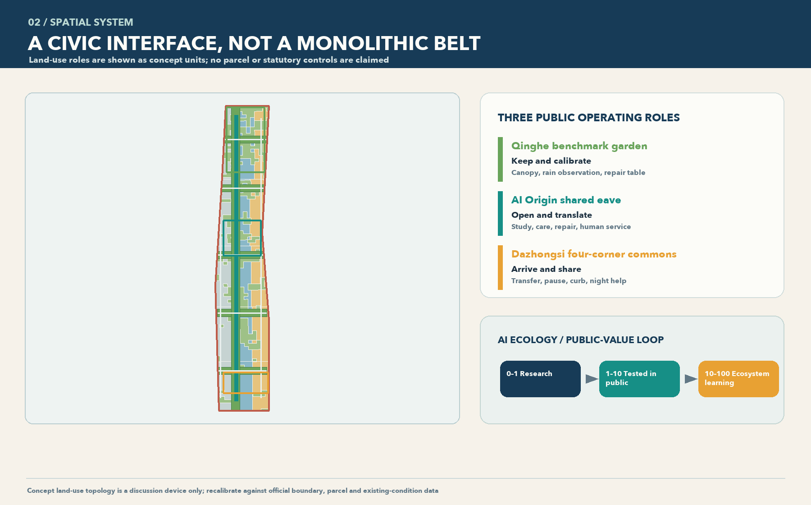
The structure combines one civic-climate spine, five cross-city seams, three innovation districts, two support loops, and ten renewal work packages. The spine combines heritage, mobility, ecology, and everyday services; the seams pursue Qinghe, Xiaoyuehe, campus-city, and transit connections; the three districts take different roles in full-stack governance, research transfer, and an AI-native urban economy; the two wings close the loop between professional services and real-world tests. Railway-heritage reuse precedent points to multiple entrances, linked public rooms, and lasting programming rather than a single linear landscape skin. Metric Metric Source
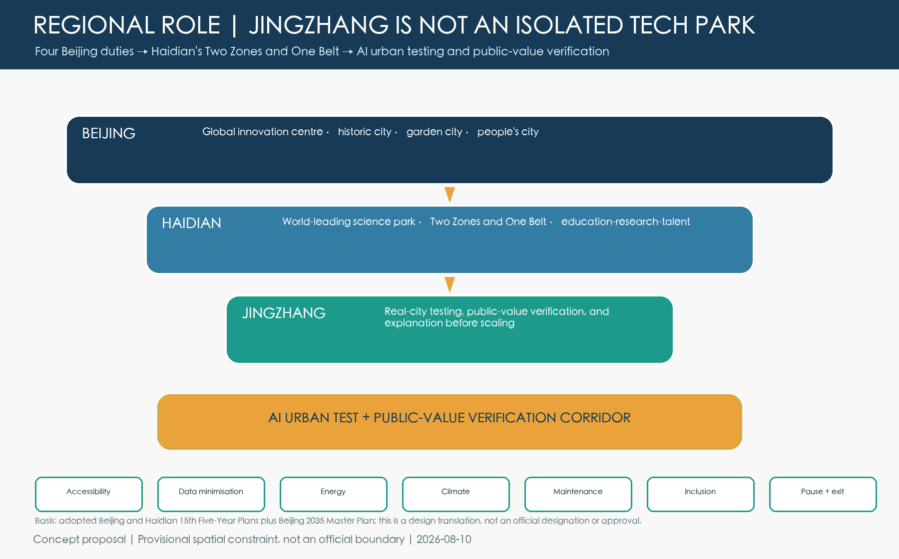
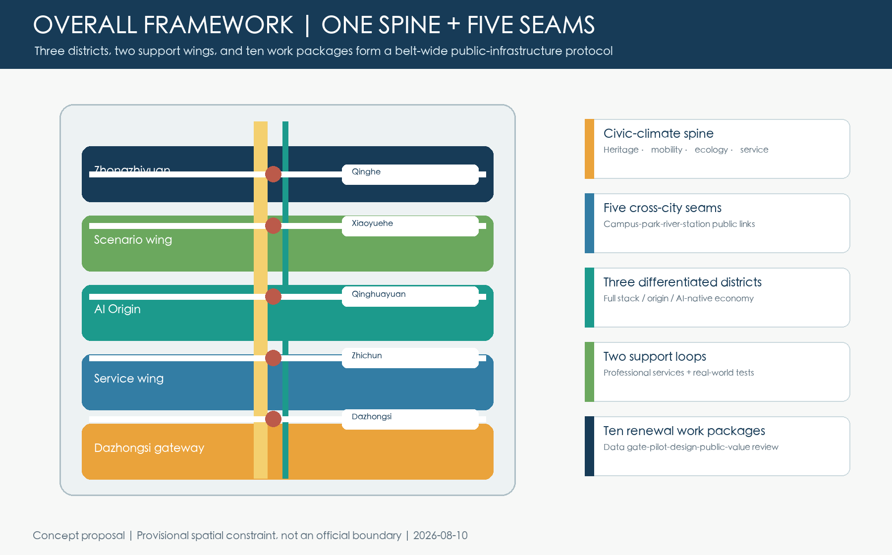
Jingzhang takes the conceptual role of Beijing's AI Urban Test and Public-Value Verification Corridor. At Beijing scale it combines the duties of a global innovation centre, historic city, garden city, and people's city. In Haidian's Two Zones and One Belt, it connects north and south while translating research into real-world tests and public explanation. On site, AI must pass accessibility, data-minimisation, energy, climate, maintenance, inclusion, and exit checks before scaling. This is a spatial policy translation, not an official designation or approval. Source Source Metric
The design starts with evidence roles, not form: official scope and policy are O-tier; public remote sensing and scoped public comments are P-tier; reproducible analysis is D-tier; Agent concepts are C-tier. They never impersonate one another. The 1,248 clipped 100m cells from ESA WorldCover 2021 are not fieldwork, yet they bring a real public-observation signal into the overall plan and overturn part of the broad green-band assumption. Metric Source
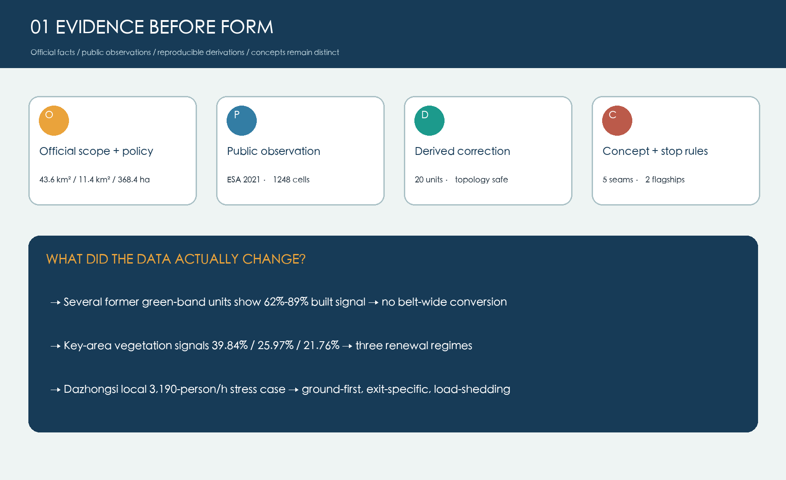
The executable thesis is: begin with retention, form through repair, and govern AI through named human responsibility. Innovation no longer means new buildings; continuity no longer means a broad green band; intelligence no longer means automated approval. Metric
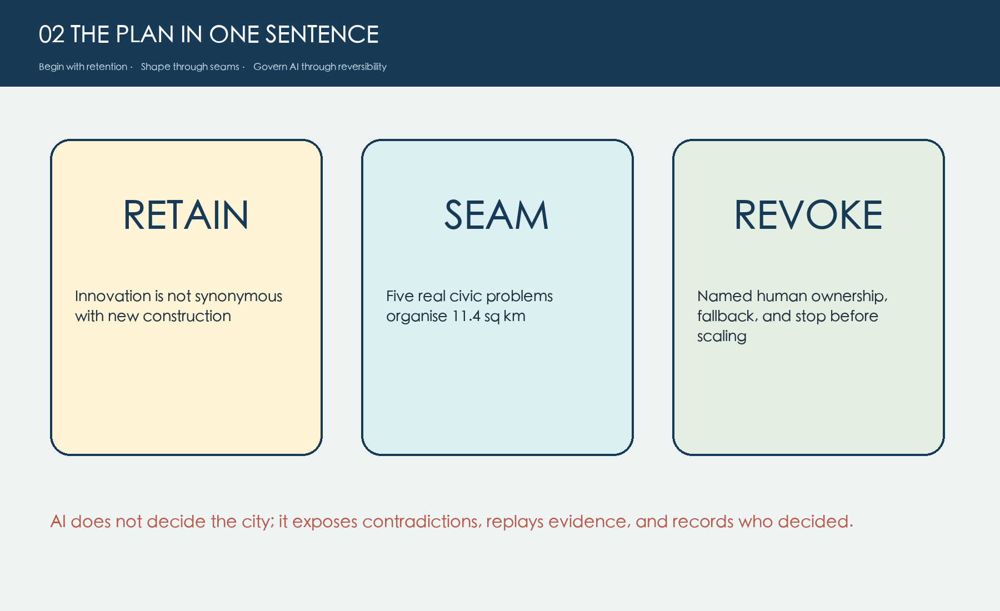
Research Area: Industry and Future City
A review of the public catalog of 309 merged proposals found 276 line/belt/spine narratives and 200 open/auditable/rollback narratives, but only 13 summaries touching architectural civic prototypes, five naming everyday service facilities, and three foregrounding shade, weather, or microclimate. This is not a ranking; it identifies a reproducible differentiation gap. Source Metric
Five global references contribute mechanisms rather than imagery: problem-to-PoC work from AI Singapore, urban testbeds from Helsinki, research-community links from Mila, public documentation from Amsterdam, and talent support from Seoul AI Hub. In Haidian they become one relationship among testing, public service, human responsibility, and long-term operation. Source Source Source
Overall Design Area: Urban Renewal
The structure combines a longitudinal heritage-green spine, transverse campus-community-river-station links, and three civic landmarks. Existing ground floors and buildings are adapted before new construction; reversible elements precede permanent works. FAR, height, road lines, bridges, tunnels, and municipal capacity remain pending formal data and specialist review. Standard Depth
The three landmarks avoid spectacle: Qinghe Benchmark Garden discloses aggregated green-AI and ecological maintenance results; Qinghuayuan Shared Eave enables campus-city sharing; and Dazhongsi Four-Corner Commons forms a civic foyer for arrival and intelligent commerce. Metric Depth
Detailed Design of the Key Areas
Zhongzhiyuan receives a benchmark garden for green-AI testing, standards, public observation, and ecological maintenance. The AI Origin Community receives the Shared Eave: quiet study, open classes, repair and shared meals, child care, staffed help, and wet-weather waiting in a reversible structure detached from heritage fabric. Dazhongsi receives Four-Corner Commons: continuous accessible interchange, cycle parking, human service, and civic commerce before any heavier station engineering is considered. Spatial data Depth
Both flagships record the public problem, spatial move, daily operation, Agent responsibility, offline fallback, and professional trigger. They remain concepts for professional deepening. Metric Spatial data

The Shared Eave becomes a linear civic room detached from heritage fabric. Its six open rooms are ordered as quiet study, open lesson, repair and meal, staffed help, care pause, and rain waiting. A 1:500-type plan, 1:200-type long section, and 1:50-type bay detail make the heritage separation, canopy, dry route, planted rain edge, and isolatable maintenance visible together. The scale chain guides professional deepening; it is not a surveyed construction drawing or a checked engineering dimension. Source Depth

Four-Corner Commons becomes a ground-level civic building that changes with time. Arrival, care, exchange, and night life occupy the four rooms; morning peak, daytime, evening peak, and night use different curb and staff responsibilities. Bridges, signals, and drainage performance await specialist studies; phase one must create public value without heavy engineering. Source Metric
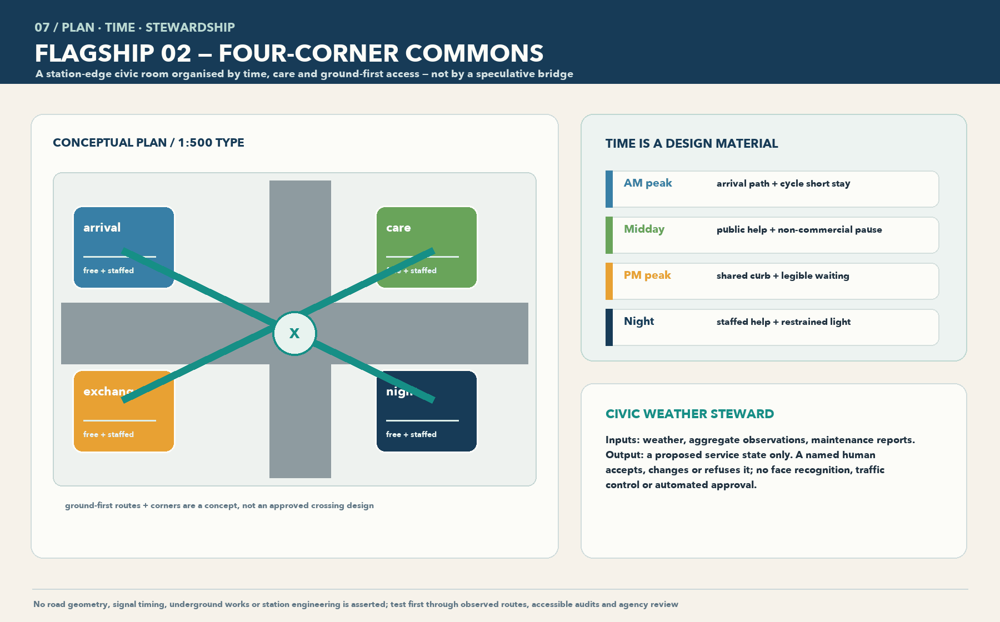
The three areas are no longer differentiated by one landmark each. Zhongzhiyuan becomes a garden innovation district linking an open-stack commons, Benchmark Garden, and north gateway to research, standards, and ecological governance. AI Origin becomes a near-campus district linking an open transfer court, Shared Eave, and life loop to research, translation, and everyday life. Dazhongsi becomes an urban innovation district linking Four-Corner Commons, a south park foyer, and station-city services to AI-native business, global exchange, and public arrival. Each has a different data gate and risk profile. Metric Spatial data Depth

AI Ecosystem, Personas, and Scenarios
Six personas represent researchers, young founders and international talent, older residents, children and carers, wheelchair and blind users, and public-service and maintenance staff. They describe service friction, not personal profiles. Metric Source
Ten scenarios include three industrial tests—green-AI energy comparison, edge-device interoperability, and controlled low-speed robot co-movement—plus eave service routing, multilingual knowledge translation, non-digital elder support, shade and waiting comfort, time-shared curb negotiation, evidence-based heritage guidance, and public-facility maintenance. Every scenario must publish six fields: public problem, minimum data, human owner, offline fallback, stop threshold, and learning receipt. Metric Metric
The Civic Weather Steward is V6.1's one spatially drawn Agent service interface. Its inputs are limited to public weather, aggregate human observations, and maintenance reports. Its output is only a proposed service state: open wet-weather waiting, adjust temporary seating, advise a detour, or call human help. A named steward can accept, change, or refuse it; a paper timetable, static bilingual wayfinding, and staffed desk remain equivalent at all times. It refuses facial recognition, individual profiling, traffic or rail control, and automated approval. If accessibility, free pause, tree or heritage protection, maintenance capacity, or human stewardship fails, the pilot must shrink or stop. Source Spatial data
V6.1 writes that boundary into the offline CWS-01 state protocol rather than claiming model capability: all 18 deterministic fixtures pass; 10 intentionally inject personal data, prohibited authority, no steward, or failed public conditions and must HOLD or REFUSE; all 18 outputs require a named human decision and automatic actions equal zero. This proves only that the declared rules are internally consistent—not field effect, public consent, safety certification, or operating authorisation. Source Metric Metric
Beyond the Civic Weather Steward, AGENT-GOV-01 makes public-space Agent admission, appeal, and exit into a reviewable state machine. Individual identification or trajectories, road or rail control, and automatic service without a named takeover and offline equivalent are all specified to be rejected in three offline governance fixtures. Neither those three fixtures nor the 18 CWS fixtures are deployment evidence. Spatial data
The Agent is not a citywide controller but ten bounded collaboration roles. A spatial Agent reads only de-identified facility conditions and human reports, then suggests a maintenance order; a service Agent supports multilingual questions, on-site routing, and appointments but cannot refuse an offline service; a mobility Agent issues conflict warnings and time-sharing options while on-site staff and competent authorities retain every final decision. Each trial publishes a learning receipt: whether the problem improved, who benefited, who may have been missed, what failed, and whether the next cycle should continue or exit. AI innovation is therefore judged by its ability to help public problems be found, deliberated, and reversibly improved—not by the model name alone.
The Civic Weather Steward testbench supplements, rather than replaces, the adversarial studio: it publishes its permitted inputs, possible outputs, prohibited authorities, human takeover, and the exact command behind 18 fixtures. Any field pilot still requires a data dictionary, privacy and security review, accessibility, heritage/tree, fire/drainage and staffing review, plus consented public participation. Metric Metric Spatial data
Land Use, Building Scale, and Adaptation
Auditable concept land-use zones remain complete and non-overlapping, but design attention shifts to public ground and porous edges. Building action follows use first, adaptation second, construction last; structural, fire, heritage, carbon, rent, and displacement evidence is required before any building-level decision. Spatial data Depth
The Shared Eave must be independent, self-supporting, reversible, and set away from heritage fabric. Four-Corner Commons prioritises the ground and existing frontages; bridges, tunnels, underground works, and permanent structures remain subjects for specialist studies. Standard Depth
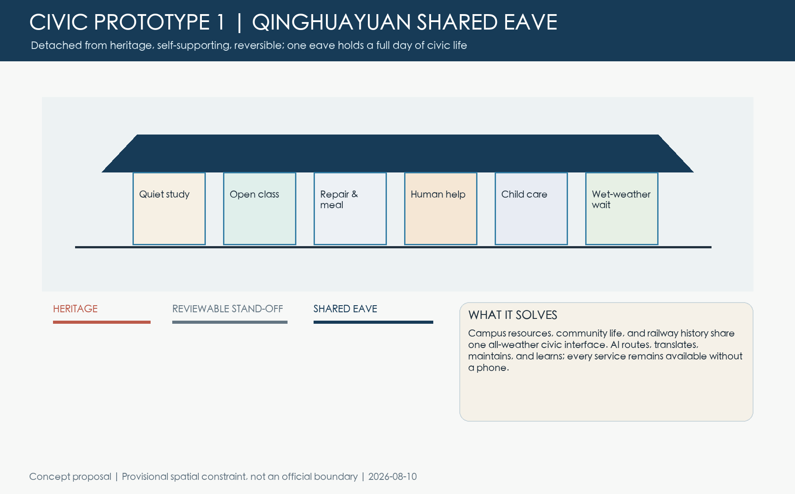
Mobility, Rail, Municipal Systems, and Public Services
Priority runs from walking and wheelchairs to cycling, transit, service traffic, and finally private through-movement. Four-Corner Commons proposes a ground-first soft X and four open corner rooms, sharing time among crossing, parking, pickup, delivery, and events. It neither controls traffic signals nor claims engineering feasibility. Spatial data Depth
Municipal and AI systems retain human takeover, offline processes, named maintenance, and recovery. Public service must never become scan-only: toilets, water, seating, shelter, cycle parking, and staffed help form the minimum kit. Depth Source
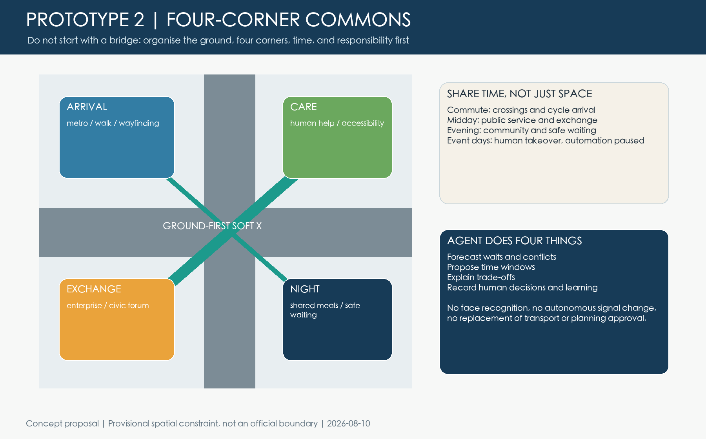
Twelve civic journeys move the review from 'a facility exists' to 'a person can complete a task'. Shared Eave tests a phone-free winter visit, a rainy wheelchair route, care after class, a first visit during outage, and one-bay maintenance. Four-Corner Commons tests peak transfer, cycle conflict, free pause, late-night arrival, event-day outage, and storm demand. These are Agent test inputs, not a public survey. Source Metric
Civic journeys cannot replace public engagement. Phase zero must recruit residents, corridor institutions, maintainers, and non-digital users through stratification, informed consent, minimum anonymous records, withdrawal, and offline channels; findings correct problems and service but do not constitute project approval or a single group veto. Spatial data
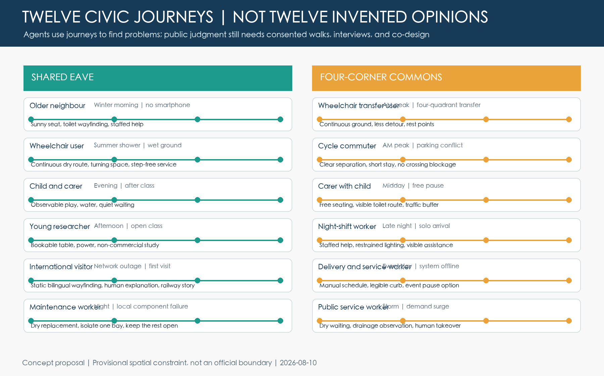
Mobility, blue-green space, utilities, and public service are treated as four networks sharing one responsibility chain. A walking and wheelchair spine plus companion cycle line support north-south continuity; five seams support campus-park-river-station links; western and eastern access chains organise transit exchange. Water, energy, edge compute, and maintenance are not drawn as unverified engineering lines; they enter each work package's data gate and human-takeover checklist. Metric Spatial data Depth
Until real routes are audited segment by segment, entrance by entrance, and in fifteen-minute time windows, the five seams remain concepts to verify. Failure of a clear route, lighting, waiting condition, or detour test stops the work for re-measurement; a diagram line cannot become a conclusion of continuous accessibility. Spatial data
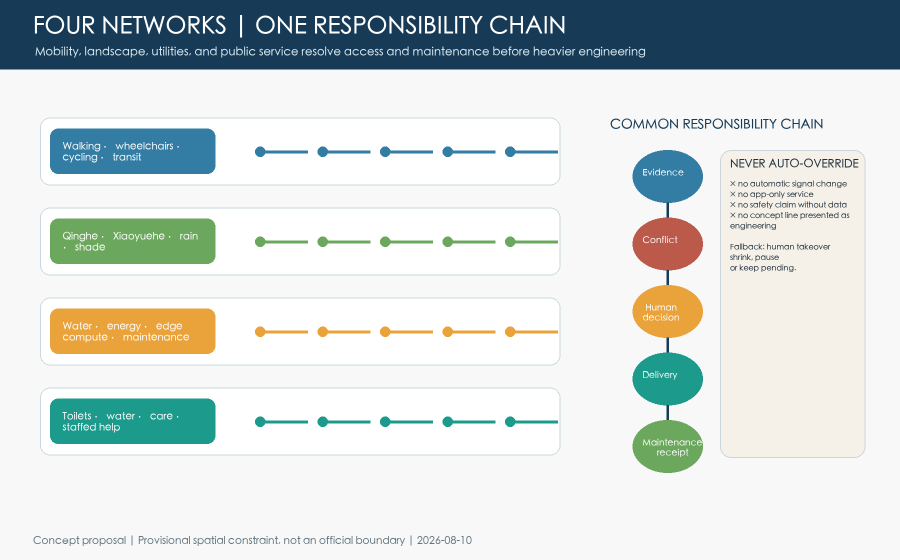
Blue-Green Space, Public Realm, and Character
Haidian's character is a set of choices rather than a material palette: green space serves everyday life, technology removes friction, and heritage enters long-term use. Railway restraint, durability, and maintainability guide the form; cyberpunk neon, giant screens, and novelty landmarks are avoided. Source Depth
The blue-green structure combines the longitudinal heritage-green spine with transverse campus-community-river-station links. Concept green-space and public-space layers are recalculated separately; rain gardens, tree arrays, and permeable paving are not misreported as statutory green land. The formal stage still requires a tree survey, waterlogging points, sponge-city targets, sunlight and wind studies, habitat evidence, and underground utilities. Shared Eave first uses existing shade and reversible shelter; Four-Corner Commons makes continuous accessible ground, drainage direction, dark-zone lighting control, and wet-weather waiting part of its minimum service kit. Spatial data Spatial data
The tree-rain-accessibility base map requires joint verification once cadastral status, existing conditions, and rights are known. WorldCover or literature cannot prove individual trees, drainage, or passability; a contradiction withdraws the relevant inference and revises the move. Spatial data
AI should become almost invisible. People first notice fewer detours, less exposure to rain, a place to sit, and a person to ask. Microclimate guidance uses aggregated environmental data only and cannot replace tree, drainage, or structural design. If the technology stops, seating, shelter, water, toilet wayfinding, and staffed help remain usable.
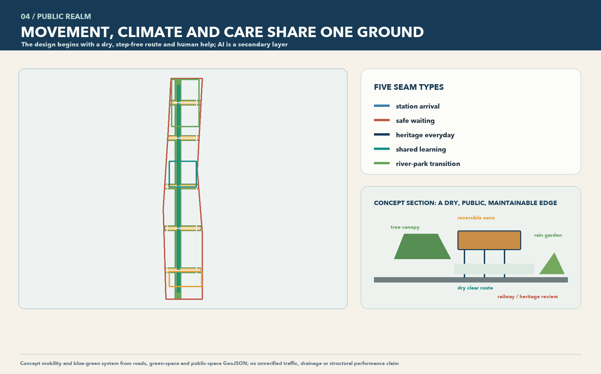
The Shared Eave shifts from one roof to a four-season civic climate: winter sun forms warm bays; spring rain drains to an outer rain garden; summer uses existing tree canopy first; autumn opens tables for public learning. Real comfort, snow and wind loads, roots, and drainage still require professional models and field data, so this proposal claims no performance result. Source Metric
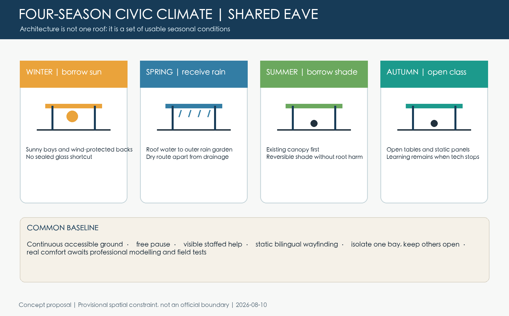
The Common Eave identity grows from three repeated civic practices rather than a technology skin: railway movement and time, Zhongguancun experimentation and openness, and AI culture based on explanation, responsibility, and exit. Lines represent railway time and cross-city seams, planes represent free shelter, and points represent staffed help and contribution honour. Navy, Qinghe green, and signal gold replace corporate-logo collage and cyber-neon. Source Depth

Projects, Policy, and Phasing
Six concept work packages organise implementation: the minimum Common Eave kit, Qinghe Benchmark Garden, Qinghuayuan Shared Eave, Dazhongsi Four-Corner Commons, transverse campus-community-river-station links, and the Agent Service Contract. Phase 0 verifies geometry, flow, accessibility, heritage, rights, and maintenance; Phase 1 tests reversible furniture, wayfinding, and staffed service; Phase 2 professionally deepens the flagships; Phase 3 scales only components with demonstrated public value. Spatial data Depth
The annual operating cycle is spring problem collection, summer prototypes, autumn public review, and winter maintenance learning. Each trial can continue, change, pause, or exit. Source Depth
Each flagship uses four gates: a data gate for geometry, survey, rights, heritage, mobility, trees, drainage, and user baselines; a reversible pilot of furniture, wayfinding, staffed service, and temporary shelter; professional architecture, structure, fire, mobility, utility, landscape, accessibility, and heritage design; and an expansion gate that replicates only proven, maintainable components. Capital and annual operating costs remain unknown until place, service scope, and responsible parties are defined. Metric Depth
Each of the ten work packages passes four gates: a data gate for boundary, rights, heritage, survey, flows, trees, and utilities; a reversible pilot limited to furniture, wayfinding, staffed service, and temporary shelter; professional planning, architecture, mobility, utility, landscape, accessibility, and operations design; and a public-value review asking who benefits, who is missed, who maintains, and whether to exit. P1/P2/P3 indicate research priority only, not committed investment or development timing. Spatial data Metric Depth
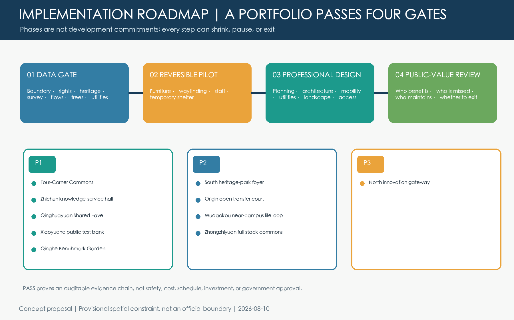
Actors are separated by decision authority. Government and responsible departments confirm statutory geometry and public duties; professional teams deepen planning, architecture, mobility, utilities, heritage, and accessibility; universities and companies provide real research and scenario needs; communities, residents, and front-line maintainers join walks and reviews; Agents organise evidence and expose conflict only. Every stage uses the same evaluation indicators: phone-free service, completed accessible journeys, protected free pause, closed maintenance tickets, and intercepted negative samples. Satisfaction, cost, and mobility improvement remain pending without credible baselines.
2026-2030 is the adopted Fifteenth Five-Year Plan delivery window: establish demographic, flow, climate, rights, and maintenance baselines; run three testbeds at Qinghe Benchmark Garden, Xiaoyuehe Public Test Bank, and Four-Corner Commons; deepen the two flagships; and publish annual learning receipts. 2031-2035 is only a 2035 adaptation window. As of August 2026 no formal Sixteenth Five-Year Plan is available for this proposal; retention, revision, scaling, or exit must follow formal plans and evaluation. Source Source Metric
Six responsibility-ledger records cover lead class, permit gate, relative cost band, O&M, phase, and stop rule. S/M/L are not estimates. Without statutory applicants, professional costs, approved O&M budgets, and representative public mandate, concept maturity cannot be presented as construction readiness. Metric
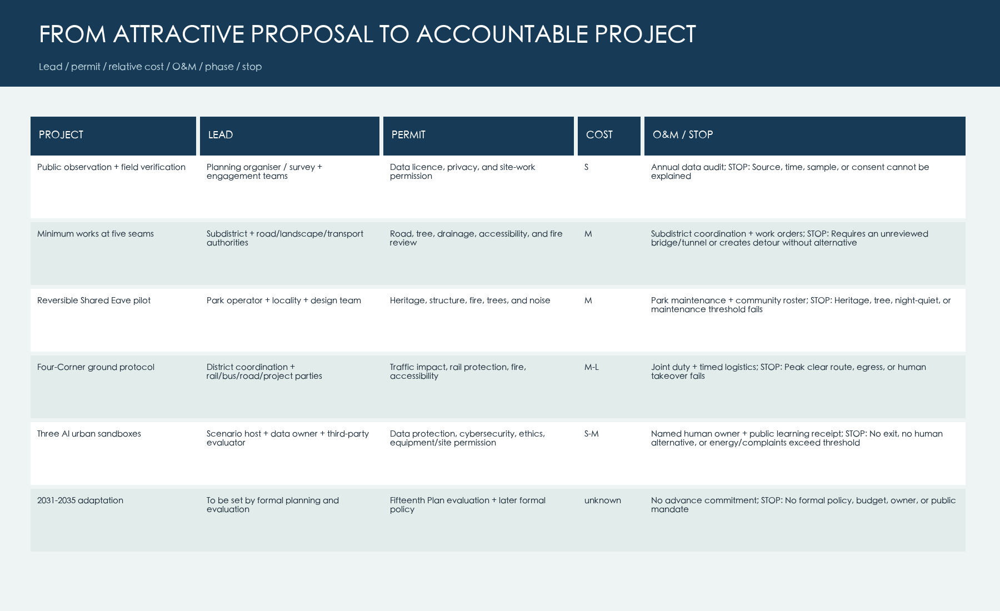
Metrics, Recalculation, and Compliance
The official intake, professional, and visual checks pass. The repository's professional spatial review has also passed in a declared isolated dependency environment; the dependency-free script is supplementary structural and obvious-topology auditing, not a replacement. Provisional site, green, public-space, and footprint values are reproducible; FAR, height, setbacks, and statutory green ratios remain unknown. Official geometry will trigger recalculation of nine layers, metrics, figures, HTML, and PDFs. Metric Depth
From a jury perspective, completeness is not enough. The two flagships must connect brief alignment, originality, AI-planning innovation, feasibility, inclusion, risk compliance, and expression into one evidence chain. Source Metric
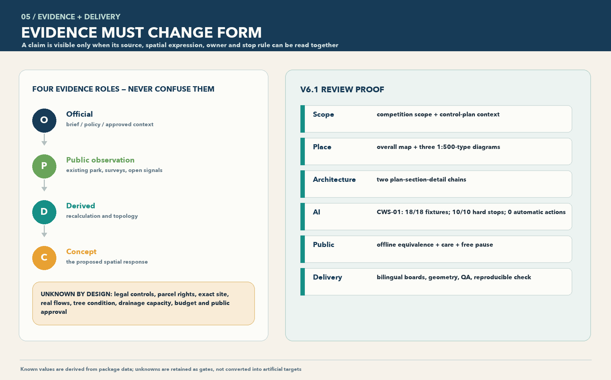
The studio contains 12 tasks and 3 negative samples; every task records a valid dispatch schema and complete audit fields. These values are recomputed from simulation.json and prove package replayability only. Average detour reduction, shelter coverage, public acceptance, and operating cost remain unknown. Metric Metric Metric
Package-recomputable counts include twenty planning units, five cross-city seams, ten renewal packages, twelve building-interface types, nine mobility links, and eleven green-network components. They prove that the planning system exists beyond the narrative. Because official geometry, parcels, controls, surveyed buildings, and engineering baselines remain missing, every ratio supports concept comparison only and is not a statutory conclusion. Metric Metric Metric
This version audits six established goals: spatial coordination, everyday life, industrial learning, civic climate, risk control, and the Beijing-Haidian regional duty all connect to spatial or structured evidence. The next pass should prioritise field demographics, anonymous flows, climate, facilities, and maintenance baselines rather than adding concepts. Metric Metric
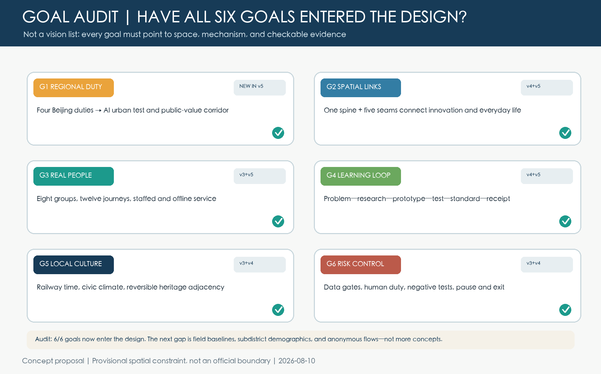
This version retains and rechecks the structure, required properties, boundary match, coverage, overlap, and containment of all nine required GeoJSON files. The provisional source records a prior EPSG:4548 area of 11,412,825 sqm; this run's dependency-free approximation is 11,399,523 sqm, a roughly 0.117% difference, and both only check the brief's approximate 11.4 sq km. The twenty concept land-use units cover it without positive-area overlap and all design features are clipped within it. Yet the package contains 67 agent-generated design features and zero public-observation features, while twelve building polygons are interface types rather than surveyed footprints. It is a recalculable concept skeleton, not existing-condition GIS, statutory control, or engineering alignment. Metric Metric Spatial data
The nine required GeoJSON files remain design layers and therefore still contain zero public-observation features. To respect the repository file limit, the 1,248 P-tier observation cells are split across visual/assets/worldcover-grid-01.json to 04.json, preserving the distinction between observation and proposal. Metric Metric
Risk, Copyright, and Compliance
This is an open co-creation proposal, not an approved plan. The Shared Eave raises heritage, fire, rights, and operating questions; Four-Corner Commons raises road, rail, fire, and commercial-interface questions. Real implementation requires specialist studies, public engagement, and statutory procedures. Source Depth
Five gates govern spatial, operating, data, algorithmic, and social risks. The spatial gate requires formal geometry, rights, survey, heritage, fire, structure, mobility, and utility evidence; the operating gate requires named staffing, maintenance, insurance, procurement, and long-term funding; the data gate enforces minimisation, purpose limitation, retention periods, and access logs; the algorithmic gate requires offline fallback, human takeover, stop thresholds, and error appeal; the social gate checks digital exclusion, accessibility, risks to children and older people, rent effects, and displacement of existing users. Failure at any gate means the trial must shrink, wait, or exit. Spatial data
Diagrams, layouts, and spatial data are deterministically generated locally. Five clearly labelled AI-generated atmosphere images communicate human-scale experience only; they are not site photographs, engineering locations, or dimensional evidence. No third-party photographs, maps, marks, or portraits are embedded. Official sources are linked as method evidence; neighbouring proposals are used only for theme-gap statistics, without copying their text, figures, or mechanisms. The 309-item catalog analysis describes keyword distribution only; it is not a jury opinion, quality ranking, or stable future total. Display permissions, attribution, allowed uses, and prohibited inferences are recorded in sources.json and the copyright statement.
References
Evidence is organised in five layers. First, the call announcement, Agent taskbook, review rubric, and provisional repository geometry define the three scales, required package, evidence contract, and formal data gaps. Second, approved-control-plan news and the Haidian Fifteenth Plan identify coordination context but never replace boundaries. Source
Third, Haidian's district plan, green-space plan, and urban-renewal guide establish compact renewal, a science city in parks, porous public ground, campus-city sharing, and human-friendly AI. Source Source Source
Fourth, the Qinghua East Road civic-room project, Zhongguancun Avenue public realm, and AI-plus-eldercare policy records test the reality of transverse links, all-age service, and non-digital fallback. Fifth, international cases and the public proposal catalog support mechanism translation and differentiation analysis only. Source
Each item in sources.json records its publisher, URL, permitted use, and prohibited inference. Policy cannot replace fieldwork; a public project cannot prove the feasibility of this proposal's location; international cases cannot be transplanted as governance rules; and the proposal catalog cannot rank other work. Official boundaries, controls, heritage limits, building surveys, flows, utilities, trees, rights, population, and operating costs remain pending. Once obtained, they trigger spatial recalculation, compliance and risk gates, and regeneration of all figures and PDFs. Source Source